📌 Chapter snapshot
- Chapter 1 of NCERT Curiosity, Science textbook for Grade 8 (reprint 2026-27). It is a short introduction chapter (7 pages): it has a Probe and ponder box, a tour of the whole year and one worked example of an investigation (the puri). It has no end-of-chapter exercise.
- Big idea: don't just learn new facts, learn how to find new facts. Ask a focused question → decide what you can change and what you can observe or measure → change only one thing at a time → keep notes → ask new questions.
- Most-asked in school exams (CBSE pattern): steps of a systematic investigation, things we change vs things we observe, why we change one thing at a time (fair test), the meaning of the root and the kite, phases of the Moon and calendars, why Earth is "just right" for life.
- New words: investigation, scientific question, observation, measurement, experiment, variable, fair test, control, phases of the Moon, calendar, ecosystem, climate.
🧪 6 live labs in this page (tap to jump)
Everything works on a phone. Your Puri Lab notebook fills in as you experiment.
Video lesson: Exploring the Investigative World of Science
A 13-minute animated lesson with narration and subtitles. Tap a topic to jump to it.
Can't play it here? 🔒 Download the video (MP4) with the PIN from MT Classes and watch it offline.
Probe and ponder
Look at the chapter opener. A small plant grows from the soil. Its roots go deep and hold science tools: a thermometer, a spring balance, a petri dish and a magnet. Above, a magnifying glass looks closely at a leaf, while the Moon and a kite float in the sky. The picture says: science grows from strong roots (careful observation) and reaches up to the sky (curiosity and new ideas).
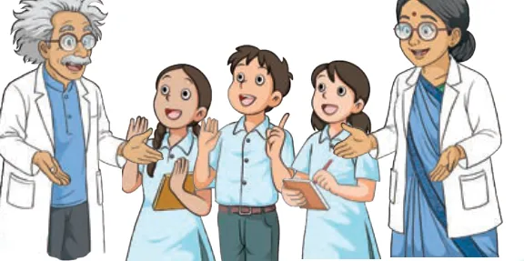
🤔 Probe and ponder (page 1)
NCERT says these questions are not for any exam. They are invitations to spark your curiosity. Here is how a scientist would start thinking about each one (full answers are in the NCERT answers section).
- Why is one side of a puri thinner than the other? We investigate this step by step in 1.6. Spoiler: even scientists do not fully understand it yet!
- Are there more grains of sand on all the beaches and deserts of the world, or more stars in our galaxy? Nobody can count them one by one, so we estimate. Try it yourself in the Sand vs stars counter.
- Why has nature created such a vast variety of plants and animals? Every living thing must survive in its own surroundings: water, sunlight, food and other organisms. Different surroundings and ways of living lead to different shapes, sizes and habits. You will see this in the ecosystems chapter.
- Is there such a question that makes you curious? Write it here! Write your own question. A good one starts with Why, How or What happens if…?
✍️ My curiosity question
Type your own question. It is saved only on this phone.
Wonder, change, investigate
Your science journey with Curiosity has three steps, one for each year of the middle stage.
🔑 The key line of the chapter
"We don't want you to just learn new facts, we want you to learn how to find new facts."
What does "investigation" mean?
Investigation means more than just looking at something and asking simple questions. An investigator:
1. Observes carefully
Uses the senses and instruments, and notes down everything: what you see, hear, smell, and numbers you measure.
2. Experiments thoughtfully
Designs a simple test to answer a focused question, changing only one thing at a time.
3. Explains clearly
Uses the observations to give a reason, then asks the next question.
Investigations can be about everyday life (why does dough rise?) or about big mysteries of Earth and beyond (is the world getting warmer?). You do not need a fancy laboratory: your kitchen is a wonderful lab.
The root and the kite
Look at the page numbers of your textbook. They have a hidden message.
| Symbol | Where | What it stands for |
|---|---|---|
| 🌱 Root | Bottom of left-hand pages | The deep, solid foundation of knowledge that keeps us connected to our environment, traditions, and our cultural and natural heritage. Stay grounded in real observations. |
| 🪁 Kite | Top corner of right-hand pages | Curiosity must take flight if we are to explore the unknown. Let your ideas soar with creative thinking. |
🧠 Remember the balance
Investigation in science works best only when we balance the solid ground of careful observation (root) with the freedom of creative thinking (kite). A kite with no string flies away; a string with no kite never flies.
The wavy lines at the bottom of each page also hide some scientific thoughts. Look closely: they look like waves, springs and steps. NCERT says they are mainly to make the page a little less boring!
The journey of Grade 8
This year we travel from tiny microbes we can't see to planet-wide challenges we can't ignore. Here are all the stops, in the order the textbook describes them.
Stops 1 and 2: Microbes and health
We start with a single drop of water and find a hidden world of tiny organisms (microbes). Some are invisible helpers (they help digest food and make medicines); others are harmful and cause infections.
Then: what does our body need to stay healthy? Nutritious food, exercise, medicines and vaccines help us stay healthy and fight infections.
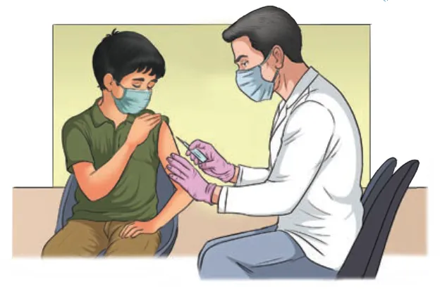
Stop 3: Electricity at work
We use electric current in many ways. The heating effect of current keeps us warm (room heater, electric iron), while the magnetic effect helps motors run and machines function.
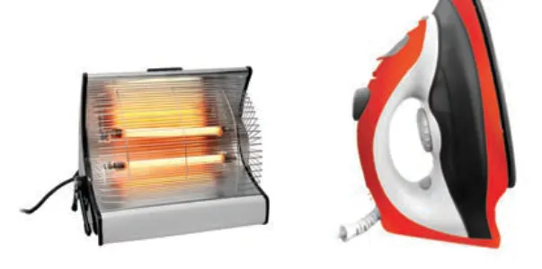
Stops 4 and 5: Forces, pressure, winds and cyclones
Forces make objects speed up, slow down or change direction. They explain why a ball thrown up falls back to the ground, and why a car stops when brakes are applied.
Pressure is how a force is distributed over an object. A small pressure difference gives a gentle breeze; a stronger one gives strong winds and sometimes cyclones, which affect our daily lives, agriculture and safety.
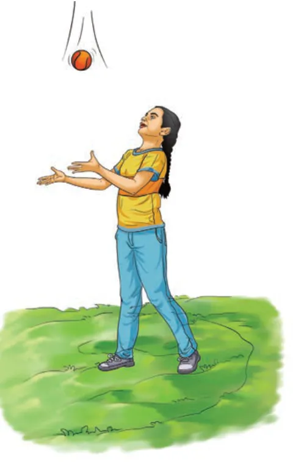
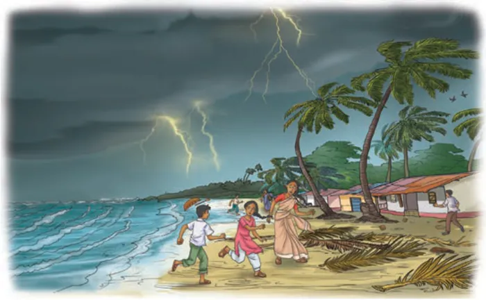
Stops 6, 7 and 8: Particles, elements and solutions
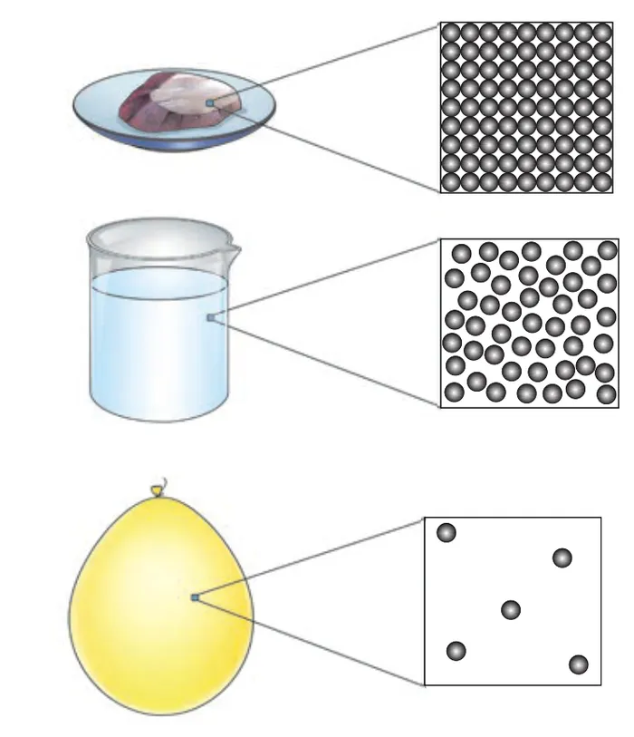
To understand why air exerts pressure or why water boils at a certain temperature, we zoom in on materials. Everything is made of tiny particles. In solids the particles cannot move much; in gases they move around freely.
We also classify materials: elements (pure substances), compounds (two or more elements bonded together) and mixtures (combinations that can be separated physically). Then we study solutions, like sugar dissolving in tea.
Already ready on our site: Chapter 8 notes and Chapter 9 notes.
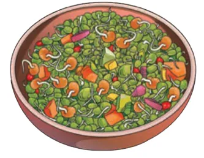
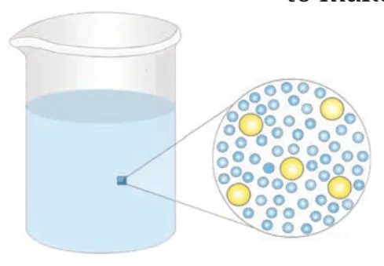
Stop 9: The world of light
Light rays reflect off flat and curved mirrors and bend when passing through lenses. This explains the image in a shiny steel spoon and how corrective glasses help many of us see clearly.
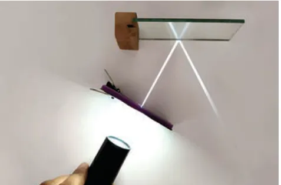
Stops 10, 11 and 12 (the Moon and calendars, ecosystems, and our Earth) are explained in the next two sections.
🗺️ Live lab: Journey of the year
Tap a stop to see the question it will answer. Can you guess the stop before you tap?
Moon phases and the first calendars
It's not just a polished mirror that reflects light. Rough surfaces reflect light too, and so does the Moon. The Moon has no light of its own; we see it because it reflects sunlight.
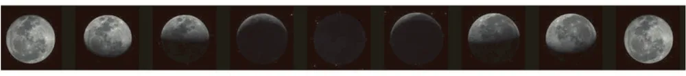
The Sun always lights half of the Moon. Depending on the positions of the Earth, Moon and Sun, we see a different part of that lit half each night. So the Moon seems to change shape: these are the phases of the Moon. One full cycle (amavasya to amavasya) takes about 29½ days.
| Phase | Indian name | What we see |
|---|---|---|
| New moon | Amavasya | Moon is dark (it is between Earth and Sun) |
| Waxing (growing) | Shukla paksha (bright fortnight) | Lit part grows each night: crescent → half → gibbous |
| Full moon | Purnima | Whole face lit (Earth is between Sun and Moon) |
| Waning (shrinking) | Krishna paksha (dark fortnight) | Lit part shrinks each night |
🌙 Live lab: Moon phase machine
Drag the slider through one month. Left: the view from far above the Earth. Right: what you see in the sky from India.
From Moon phases to calendars
Watching the regular cycle of Moon phases allowed humans to make the first calendars. By combining careful observations of sunrises, sunsets and lunar cycles, many calendars came into being. Isn't it fascinating that the calendars that run our routines on Earth are linked to the motions of objects far beyond our planet?
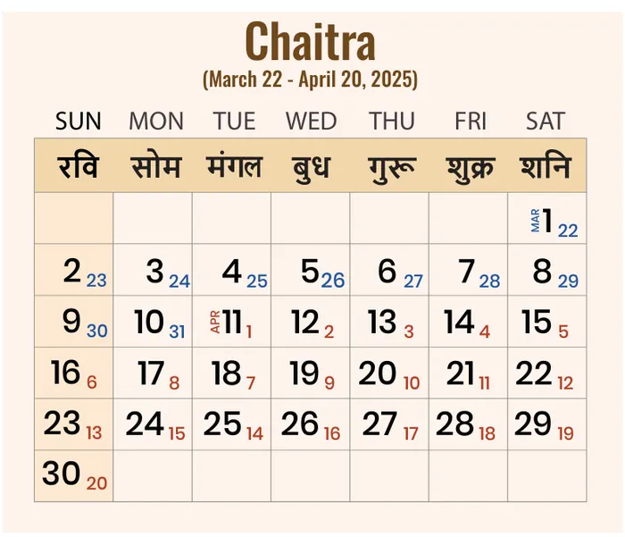
Read the calendar in the textbook. Each box has two dates: the big number is the date in Chaitra, the first month of the Indian national calendar (Saka calendar). The small number is the familiar Gregorian date (March or April).
- Chaitra 1 = 22 March (a Saturday in 2025).
- Chaitra has 30 days here, so Chaitra 30 = 20 April.
- The weekdays are written in English and Hindi: रवि (Sun), सोम (Mon), मंगल (Tue), बुध (Wed), गुरु (Thu), शुक्र (Fri), शनि (Sat).
📅 Live mini-lab: Chaitra calendar decoder
Slide to a Chaitra date and see the matching Gregorian date and weekday (Chaitra 1947 Saka, 2025).
Ecosystems and our "just right" Earth
Right here on Earth there are marvellous patterns of relationships between living organisms and their environments.
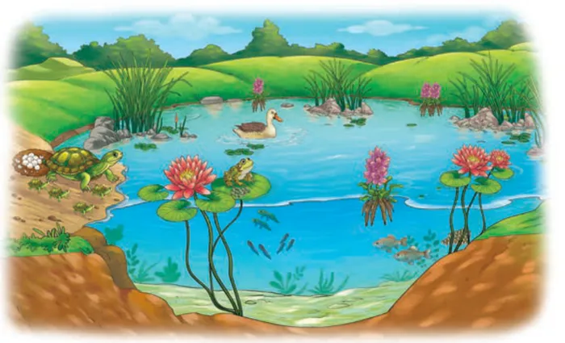
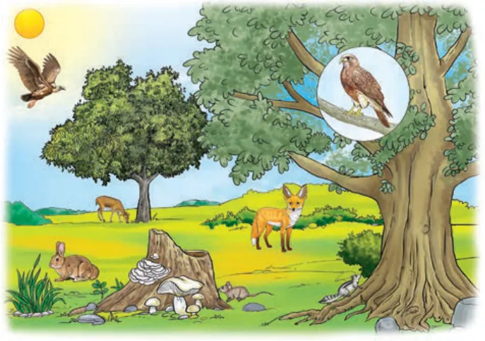
Every living being, from the tiniest insect to the largest whale, from blades of grass to tall trees, depends on and responds to the air, water, sunlight and other organisms around it. Together they form ecosystems that support life on our planet.
Why is Earth "just right" for life?
☀️ Perfect distance
Earth lies at the perfect distance from the Sun, where water remains liquid.
🌬️ Atmosphere
Provides the oxygen we breathe.
🛡️ Shield
The atmosphere shields us from harmful ultraviolet (UV) rays.
⚠️ The urgent challenge
Human activities can cause small changes in the temperature of the Earth, disrupting climate patterns, with dangerous consequences. At the heart of both the problem and the solution is us. We influence Earth's climate, and we can, and must, use science to understand these changes and guide our actions.
The same principles that guided us through the middle stage, observing, measuring and experimenting, will be key to protecting the delicate balance on which life depends.
Thinking like a scientist: the puri investigation
Let us go back to the first Probe and ponder question: Why is one side of a puri thinner than the other?
Science is everywhere. Your kitchen is a wonderful lab. Have you noticed how a puri or a bhatura puffs up when placed in hot oil? Or how a phulka swells when put directly on the flame? Why does it puff up like a balloon? And why is one side thinner than the other? These are questions a scientist might ask, and you can too.
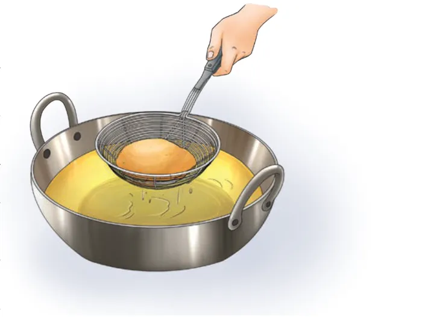
Step 1: Ask a scientific question
"Why does a puri puff?" is a big question. A scientist turns it into a focused one: "What are the different things that may change the way a puri puffs up when fried?"
Step 2: List what we can change, and what we can observe
Things we can CHANGE (control)
Things we can OBSERVE or MEASURE
Step 3: Change only ONE thing at a time
To see the effect of oil temperature (boiling hot, hot, not very hot), we use circles of dough of the same thickness, and drop them in the same way. Only the oil temperature changes. This is called a fair test. If we changed two things together, we could not tell which one caused the difference.
Step 4: Keep notes and ask more questions
Write down everything you see and sense. After one round, new questions appear: Do puris puff better when made from fresh or stored dough? What happens if I prick a hole in the puri before frying?
🤯 Even scientists don't fully know!
NCERT says that even this simple everyday observation, a puri puffing, is not completely understood by scientists today. A common explanation is that the water in the dough turns into steam in hot oil; the outer surfaces quickly cook into a skin that traps the steam, and the steam pushes the layers apart like a balloon. Why the two layers come out unequal is still a puzzle you can investigate.
🥟 Live lab: Puri Lab (a fair-test experiment)
Set up your puri and press Fry. Change one setting, fry again and compare. The notebook checks whether your test was fair. (A practice model, made by MT Classes: real kitchens will give somewhat different numbers.)
| # | What changed | Puffed? | Time (s) | Notes |
|---|---|---|---|---|
| Your notebook fills in here. | ||||
Systematic investigation
NCERT says: this is exactly how all scientific experiments, from simple to the most complicated, are done. This is the idea of systematic investigation.
Variables: the scientist's word for "things that can change"
NCERT does not use this word yet, but you will meet it in higher classes, and many school papers use it:
| Type | Meaning | Puri example |
|---|---|---|
| Thing we change (independent variable) | The ONE thing we change on purpose | Oil temperature |
| Thing we observe/measure (dependent variable) | What we watch to see if the change made a difference | Puffed or not; time to puff (s) |
| Things kept the same (controlled variables) | Everything else, kept equal so the test is fair | Same thickness, same size, same flour, same way of dropping |
Yes/no observations
Did it puff? Did the oil smoke? Easy to note, but they tell less.
Measurements (numbers)
Time to puff in seconds, thickness in mm, temperature in °C. Numbers let us compare exactly.
✅ A good investigation checklist
- Is my question focused and testable? ("Does oil temperature change the time a puri takes to puff?")
- Am I changing only one thing?
- Do I know what I will observe or measure, and how (stopwatch, ruler, thermometer)?
- Will I repeat each trial a few times? (One puri may behave oddly by chance.)
- Am I keeping notes of everything, even surprises like splattering or smoke?
- Am I being safe? Hot oil experiments only with an adult.
📝 Live lab: Investigation planner
Pick a topic, the thing you will change and the thing you will measure. The planner writes a focused question and a fair-test plan for you.
Sand or stars? Estimating big numbers
The second Probe and ponder question asks: are there more grains of sand on all the beaches and deserts of the world, or more stars in our galaxy? No one can count either one by one. Scientists estimate: they measure a small sample and multiply up.
🏖️ Live lab: Sand vs stars counter
Make your own beach. Change the grain size and the beach size and see how many grains it holds.
🔭 What do scientists estimate?
Rough estimates for all the beaches and deserts of Earth come to about 1018 to 1019 grains (a 1 followed by 18 or 19 zeros). Our galaxy has about 1011 stars. So there are many more grains of sand than stars in our galaxy, roughly ten million times more! But if you count the stars in all the galaxies of the observable universe (about 1022 or more), the stars win. These are estimates, so different scientists get somewhat different numbers.
Mind map, snapshots and traps
📸 Snapshots (chapter summary)
- Grade 6: science begins with wonder. Grade 7: science evolves. Grade 8: we investigate.
- The aim is not just to learn facts but to learn how to find new facts.
- The root (bottom of left pages) stands for a solid foundation of knowledge and careful observation; the kite (top of right pages) stands for curiosity and creative thinking. Good science balances both.
- The year's journey: microbes → health → electricity → forces → pressure, winds and cyclones → particles → elements, compounds and mixtures → solutions → light → Moon phases and calendars → ecosystems → Earth and its challenges.
- The Moon reflects sunlight; its phases depend on the positions of the Earth, Moon and Sun. Moon phases helped humans make the first calendars.
- Earth is "just right": liquid water, oxygen, and a shield from UV rays. Human activities can change Earth's temperature; science can guide our actions.
- A systematic investigation: focused question → what to change and what to observe → change one thing at a time → keep notes → new questions.
- Even the puffing of a puri is not completely understood by scientists: science is never finished.
🚫 Common mistakes
"Science needs a fancy laboratory." Wrong
You can investigate in your kitchen. You need curiosity, careful observation and the question "what happens if…?"
"Change oil temperature AND thickness together to save time." Wrong
Then you cannot tell which change made the difference. Change only one thing at a time.
"One trial is enough." Trap
One puri may behave oddly by chance. Repeat a few times and compare.
"The Moon makes its own light." Wrong
The Moon reflects sunlight, like a rough surface does.
"Moon phases happen because Earth's shadow covers the Moon." Wrong
That is an eclipse. Phases happen because we see different amounts of the Moon's sunlit half as it goes round the Earth.
"Scientists already know everything about everyday things." Wrong
Even why a puri puffs is not completely understood. Every answer opens new questions.
"The root means old knowledge, the kite means new knowledge." Trap
Root = solid foundation and careful observation; kite = curiosity and creative thinking. Science needs both together.
"Only yes/no observations count." Wrong
Measurements (like time in seconds) are often better, because numbers can be compared exactly.
Investigator Arcade: 8 games
Play to learn. Every game gives you ⭐ stars, saved on this phone. Collect all 40 to become a Chief Investigator.
🎛️ Game 1: Change, measure or keep the same?
Read the experiment. Is the highlighted thing what we change, what we measure, or what we keep the same? 10 rounds.
⚖️ Game 2: Fair test or not?
Is the student's test fair? If not, why? 8 rounds.
🗺️ Game 3: Which stop of the journey?
Which part of this year's science will answer this question? 10 rounds.
🔢 Game 4: Steps in order
Tap the steps of the investigation in the right order. A wrong tap costs a life. 4 investigations.
🌙 Game 5: Name the phase
Look at the Moon and name its phase. 8 rounds.
🃏 Game 6: Memory match
Flip two cards. Match each word with its meaning. Fewer moves, more stars.
⏱️ Game 7: Speed round
True or false? As many as you can in 60 seconds. A wrong answer costs 3 seconds.
🕵️ Game 8: Science detective
Read the observation and pick what a good scientist would conclude or do next. 8 cases.
Exam pattern and answer-writing
📝 How Class 8 Science is tested
- There is no board exam in Class 8, so there are no CBSE board previous-year questions for this chapter. Your school's periodic tests, half-yearly and annual papers are set by the school.
- Most CBSE schools now use the same section pattern as the Class 9 and 10 board papers. The question bank below follows it: A MCQ and Assertion-Reason (1 mark), B very short answer (2 marks), C short answer (3 marks), D long answer (5 marks), E case-based (4 marks: 1 + 1 + 2).
- Chapter 1 has no exercise, so schools usually ask competency-based questions: plan a fair test, name what to change and what to measure, spot an unfair test, explain the root and kite, Moon phases and calendars.
Plan-a-test (3 or 5 marks)
Question (½–1) + what you change (1) + what you measure and how (1) + what you keep the same (1) + repeat and record (1).
Explain (2 or 3 marks)
One clear idea per mark, with the puri or another everyday example.
Case-based (4 marks)
Read slowly. Pick out what was changed, what was measured and what was kept the same before answering.
✍️ Marks-winning habits
- Use the words change, observe/measure, keep the same and fair test in your answers.
- Say how you will measure: stopwatch (seconds), ruler (mm/cm), thermometer (°C), balance (g).
- Always add repeat the trial and record in a table in experiment answers.
- For the Moon: write "the Moon reflects sunlight" and "phases depend on the relative positions of the Earth, Moon and Sun".
- Draw a simple labelled table for observations: it earns easy marks.
Marks shown in green boxes in the question bank are a guide to how a CBSE-style school paper would split the marks, written by MT Classes (not from an official paper).
Question bank with answers
Every kind of question this chapter can be asked in a CBSE-style school exam. Tap a question to see the model answer. Green boxes show how marks are usually split.
Class 8 has no board exam, so there are no board previous-year questions (PYQs) for this chapter. These 70 questions are written by MT Classes in the CBSE pattern.
Section A: Multiple choice questions (1 mark each)
1.In Grade 8, the main aim of Curiosity is to help you (a) memorise more facts (b) learn how to find new facts (c) only read stories of scientists (d) prepare only for exams
(b) learn how to find new facts. NCERT says: "We don't want you to just learn new facts, we want you to learn how to find new facts."
2.The root on the page numbers of the textbook stands for (a) creative thinking (b) a deep, solid foundation of knowledge (c) plants and trees only (d) the end of a chapter
(b) a deep, solid foundation of knowledge that keeps us connected to our environment, traditions and heritage.
3.The kite at the top of right-hand pages reminds us that (a) we should fly kites on holidays (b) curiosity must take flight to explore the unknown (c) science is only about the sky (d) wind causes cyclones
(b) curiosity must take flight if we are to explore the unknown.
4.Investigation in science works best when we balance (a) reading and writing (b) careful observation and creative thinking (c) homework and games (d) teachers and textbooks
(b) the solid ground of careful observation (root) with the freedom of creative thinking (kite).
5.In Grade 6 we learnt that science begins with (a) wonder (b) exams (c) machines (d) formulas
(a) wonder, with simple "Why?" and "How?" questions.
6.In Grade 7 we learnt that science (a) never changes (b) is always evolving (c) is only about plants (d) ends with one answer
(b) is always evolving: each answer opens new questions.
7.To find out if oil temperature affects puffing, we should (a) change the oil temperature and the thickness together (b) change only the oil temperature and keep everything else the same (c) change nothing (d) use different flour each time
(b) change only one thing at a time; this is a fair test.
8."The time taken by a puri to puff up" is an example of something we (a) change (b) observe or measure (c) keep the same (d) cannot study
(b) observe or measure, in seconds with a stopwatch.
9.Which of these is something we can control in the puri experiment? (a) Whether the puri puffs (b) The time to puff (c) The temperature of the oil (d) The smell of the oil
(c) The temperature of the oil. The others are things we observe.
10."Did the puri puff up?" gives an observation of the type (a) a number in seconds (b) yes/no (c) a temperature (d) a length
(b) yes/no.
11.The Moon is seen at night because it (a) makes its own light (b) reflects sunlight (c) reflects light from Earth's cities (d) is very hot
(b) reflects sunlight. Like rough surfaces, the Moon reflects light.
12.The phases of the Moon depend on (a) clouds (b) the relative positions of the Earth, Moon and Sun (c) the Moon changing its size (d) Earth's shadow on the Moon every night
(b) the relative positions of the Earth, Moon and Sun.
13.The first calendars were made by watching (a) the periodic cycles of the Moon's phases (b) cyclones (c) the flowering of plants only (d) rainfall
(a) the periodic cycles of the Moon's phases, along with sunrises and sunsets.
14.The heating effect of electric current is used in (a) a fan motor (b) a room heater (c) a compass (d) a doorbell magnet
(b) a room heater (also an electric iron).
15.The magnetic effect of electric current helps (a) motors run (b) heaters glow (c) water boil in a kettle (d) bulbs give heat only
(a) motors run and machines function.
16.A small difference in air pressure can produce (a) a cyclone (b) a gentle breeze (c) an earthquake (d) rain always
(b) a gentle breeze. A stronger difference gives strong winds and sometimes cyclones.
17.Particles that can move around freely are found in (a) solids (b) gases (c) only metals (d) only ice
(b) gases. In solids the particles cannot move much.
18.A combination of substances that can be separated physically is (a) an element (b) a compound (c) a mixture (d) a pure substance
(c) a mixture.
19.Earth is "just right" for life because (a) it is the biggest planet (b) it is at a distance from the Sun where water remains liquid (c) it has no atmosphere (d) it is the hottest planet
(b) it lies at the perfect distance from the Sun for liquid water; its atmosphere also gives oxygen and shields us from UV rays.
20.In the textbook calendar, Chaitra 1 falls on (a) 1 April (b) 22 March (c) 14 January (d) 20 April
(b) 22 March (2025). Chaitra runs from 22 March to 20 April.
21.Assertion (A): In an experiment we should change only one thing at a time. Reason (R): If two things are changed together, we cannot tell which one caused the result. (a) Both A and R true, R explains A (b) Both true, R does not explain A (c) A true, R false (d) A false, R true
(a) Both are true and R correctly explains A.
22.Assertion (A): We need a well-equipped laboratory to do any science experiment. Reason (R): Science can be done with curiosity, careful observation and simple materials at home. (a) Both true, R explains A (b) Both true, R does not explain A (c) A true, R false (d) A false, R true
(d) A is false: even the kitchen is a wonderful place to do simple experiments. R is true.
23.Assertion (A): Scientists completely understand why a puri puffs. Reason (R): Every answer in science can open new questions. (a) Both true, R explains A (b) Both true, R does not explain A (c) A true, R false (d) A false, R true
(d) A is false: NCERT says puri puffing is not completely understood by scientists today. R is true.
24.Assertion (A): We see different shapes of the Moon on different nights. Reason (R): A slightly different part of the Moon is lit for us each night depending on the positions of the Earth, Moon and Sun. (a) Both true, R explains A (b) Both true, R does not explain A (c) A true, R false (d) A false, R true
(a) Both true; R explains A.
25.Assertion (A): Keeping notes of everything during an experiment is useful. Reason (R): Notes like oil splattering or smoke may lead to new questions and explanations. (a) Both true, R explains A (b) Both true, R does not explain A (c) A true, R false (d) A false, R true
(a) Both true; R explains A.
26.Assertion (A): Humans can affect Earth's climate. Reason (R): Human activities can cause small changes in the temperature of the Earth. (a) Both true, R explains A (b) Both true, R does not explain A (c) A true, R false (d) A false, R true
(a) Both true; R explains A.
27.Assertion (A): A rough surface does not reflect light at all. Reason (R): The Moon reflects sunlight. (a) Both true, R explains A (b) Both true, R does not explain A (c) A true, R false (d) A false, R true
(d) A is false: rough surfaces reflect light too (as the Moon does). R is true.
28.Assertion (A): Measuring the time to puff in seconds gives more information than only noting "puffed: yes". Reason (R): Numbers allow exact comparison between trials. (a) Both true, R explains A (b) Both true, R does not explain A (c) A true, R false (d) A false, R true
(a) Both true; R explains A.
Section B: Very short answer questions (2 marks each)
29.What does "investigation" in science mean, according to this chapter?
It means more than just looking at something and asking simple questions 1. It means asking focused questions, designing simple experiments to answer them and using the observations to improve our understanding 1.
30.Write the meaning of the two symbols on the page numbers of Curiosity Grade 8.
Root (bottom of left pages): a deep, solid foundation of knowledge that keeps us connected to our environment, traditions and heritage 1. Kite (top of right pages): curiosity must take flight to explore the unknown 1.
31.Name any two things we can change and two things we can observe in the puri experiment.
Change: thickness of the dough, size, type of flour, temperature of the oil, the way it is dropped in (any two) 1. Observe: whether it puffs (yes/no), time taken to puff (seconds), whether a thick dough still gives a thin side, splattering or smoke (any two) 1.
32.Why should we change only one thing at a time in an experiment?
So that any difference in the result can be linked to that one change 1. If we change two things together, we cannot tell which one caused the difference 1.
33.Give two examples of everyday questions and two examples of big mysteries that science can investigate.
Everyday: why does dough rise? why does a puri puff? 1. Big mysteries: is the world getting warmer? are there more sand grains or stars? 1.
34.Why is the kitchen called a wonderful place to do science?
Many changes happen there every day: dough rises, puris puff, sugar dissolves, water boils 1. We need only curiosity, careful observation and the question "what happens if…?", not a fancy laboratory 1.
35.Name two microbes-related ideas you will study this year.
Some microbes are invisible helpers: they help us digest food or produce medicines 1. Others are harmful and cause infections 1.
36.How do we stay healthy and fight infections? Give two ways.
Any two: eating nutritious food, exercise, medicines, vaccines 1 + 1.
37.State the heating and magnetic effects of electric current with one use each.
Heating effect: current produces heat; used in a room heater or electric iron 1. Magnetic effect: current produces magnetism; helps motors run and machines function 1.
38.What two things do forces do to moving objects? Give one example.
Forces make objects speed up, slow down or change direction 1. Example: a ball thrown up falls back to the ground; a car stops when brakes are applied 1.
39.How are pressure differences related to winds?
A small difference in air pressure makes a gentle breeze 1. A stronger pressure difference leads to strong winds and sometimes cyclones 1.
40.Compare the movement of particles in solids and gases.
In solids, particles cannot move much (they are tightly packed) 1. In gases, particles are far apart and move around freely 1.
41.Define element, compound and mixture in one line each. (Any two for 2 marks.)
Element: a pure substance 1. Compound: two or more elements bonded together. Mixture: a combination that can be separated physically 1.
42.Why does the Moon show phases?
The Moon reflects sunlight; the Sun always lights half of it 1. As the relative positions of the Earth, Moon and Sun change, we see a slightly different part of the lit half each night 1.
43.How did the Moon help humans make calendars?
The Moon's phases repeat in a regular cycle of about 29½ days 1. Watching these cycles, along with sunrises and sunsets, people counted days and months and made the first calendars 1.
44.Give two reasons why Earth is suitable for life.
It is at the perfect distance from the Sun, so water remains liquid 1. Its atmosphere gives the oxygen we breathe and shields us from harmful UV rays 1.
Section C: Short answer questions (3 marks each)
45.How is Grade 8 science different from Grades 6 and 7?
Grade 6: science begins with wonder, simple Why and How questions 1. Grade 7: science is always evolving; each answer opens new questions 1. Grade 8: we investigate: ask focused questions, design simple experiments and use observations to improve our understanding 1.
46.Explain why investigation works best when we balance the root and the kite.
The root stands for staying grounded in real, careful observations and a solid foundation of knowledge 1. The kite stands for curiosity and creative thinking that lets ideas soar 1. With only observations we may not find new ideas; with only imagination our ideas may be wrong. Together they give reliable new knowledge 1.
47.Explain the steps a scientist would follow to investigate why a puri puffs up.
Ask a focused question: what may change the way a puri puffs? 1. List what can be changed (thickness, size, flour, oil temperature, way of dropping) and what can be observed (puffs or not, time to puff, thin side) 1. Change one thing at a time, keep notes of everything, and ask new questions from the results 1.
48.Riya wants to see the effect of oil temperature on a puri. Write how she should plan her experiment.
Change: only the oil temperature: boiling hot, hot and not very hot 1. Keep the same: dough circles of the same thickness and size, same flour, dropped in the same way 1. Observe: whether each puffs and the time taken (stopwatch); repeat and note everything in a table 1.
49.What is the difference between things we change and things we observe in an experiment? Give one example of each from the puri experiment.
Things we change (control) are what we decide on purpose before the experiment 1. Things we observe or measure show whether the change made any difference 1. Example: change: oil temperature; observe: time taken to puff (seconds) 1.
50.Why is it a good idea to keep notes of everything during an experiment? Give two examples of such notes.
Notes help us remember and compare results correctly, and unexpected details can lead to new questions 1. Examples: did the oil splatter, smell or smoke? 1. Did one side come out thinner? how many seconds did it take to puff? 1.
51."Each answer opens new questions." Explain with the puri example.
After one round of experiments on oil temperature, new questions appear 1: do puris puff better when made from fresh or stored dough? 1. What happens if I prick a hole in the puri before frying? This is how science keeps growing 1.
52.List the topics you will study this year in the order given in Chapter 1.
Microbes and health; electricity (heating and magnetic effects) 1. Forces; pressure, winds, storms and cyclones; particles; elements, compounds and mixtures; solutions 1. Light (mirrors and lenses); Moon phases and calendars; ecosystems; Earth and its challenges 1.
53.Explain the link between forces, pressure and weather events as described in the chapter.
Forces make objects speed up, slow down or change direction 1. Pressure is how a force is distributed over an object; the same ideas decide how air moves 1. Pressure differences cause breezes, strong winds and even cyclones, which affect daily life, agriculture and safety 1.
54.Why do we need to zoom into materials to understand them? What do we find?
To understand why air exerts pressure or why water boils at a certain temperature, we must look at what particles materials are made of 1. Everything is made of tiny particles 1. In solids the particles cannot move much; in gases they move around freely 1.
55.Explain how light helps us understand objects around us. Give two examples.
Light rays reflect off flat and curved mirrors and bend when they pass through lenses 1. Example 1: the image we see in a shiny steel spoon 1. Example 2: corrective glasses help many of us see clearly 1.
56.Describe what ecosystems are, with an example.
Every living being, from the tiniest insect to the largest whale, depends on and responds to air, water, sunlight and other organisms 1. These relationships between living things and their environment form ecosystems 1. Example: a pond (lotus, fish, frogs, ducks, water, sunlight) or a forest 1.
57."At the heart of both the problem and the solution is us." Explain.
Human activities can cause small changes in Earth's temperature, disrupting climate patterns with dangerous consequences: we are part of the problem 1. We can also use science (observing, measuring, experimenting) to understand these changes 1. Then we can guide our actions to protect the balance on which life depends: we are the solution 1.
58.Read the Chaitra calendar in the textbook. What do the two numbers in each box show? Which Gregorian dates match Chaitra 1 and Chaitra 30?
The big number is the date in Chaitra, a month of the Indian national calendar 1. The small number is the Gregorian date (March or April) 1. Chaitra 1 = 22 March and Chaitra 30 = 20 April (2025) 1.
Section D: Long answer questions (5 marks each)
59.What is a systematic investigation? Describe its steps using the example of a puri puffing up in hot oil.
A systematic investigation is a planned, step-by-step way of answering a question through observation and experiment; all experiments, simple or complicated, are done this way 1. (i) Observe and wonder: a puri puffs up in hot oil and one side is thinner ½. (ii) Ask a focused question: what may change the way a puri puffs? ½. (iii) List things to change: thickness, size, flour, oil temperature, way of dropping; and things to observe: puffs or not, time taken, thin side, splatter or smoke 1. (iv) Change only one thing at a time (fair test), e.g. oil temperature with same thickness and same way of dropping; repeat and keep notes 1. (v) Explain the results and ask new questions: fresh vs stored dough, pricking a hole 1.
60.Plan a fair test to find whether the thickness of the rolled dough affects whether a puri puffs and how long it takes. Draw a table to record your observations.
Aim/question: does the thickness of the dough affect puffing? ½. Change: thickness: thin (1 mm), medium (2 mm), thick (4 mm) 1. Keep the same: size of circle, type of flour, freshness of dough, oil temperature (same hot oil), way of sliding in 1. Measure/observe: puffed (yes/partly/no) and time to puff with a stopwatch; note splatter, smoke, thin side 1. Repeat each thickness three times ½. Table 1: Thickness | Trial | Puffed? | Time (s) | Notes. Safety: fry only with an adult.
61.Describe the journey of Grade 8 science from "tiny microbes we can't see" to "planet-wide challenges we can't ignore".
Microbes in a drop of water: some help digest food and make medicines, some cause infections; health: nutritious food, exercise, medicines and vaccines 1. Electricity: heating effect (room heater) and magnetic effect (motors); forces that change speed and direction; pressure, winds, storms and cyclones 1. Matter: tiny particles in solids, liquids and gases; elements, compounds and mixtures; solutions like sugar in tea 1. Light: reflection by mirrors, bending by lenses; Moon phases and the first calendars 1. Ecosystems and our Earth: why Earth is just right for life, and how human activities are changing the climate 1.
62.Explain the phases of the Moon. How did they help humans make calendars? Name the full moon and the new moon in Indian terms.
The Moon has no light of its own; it reflects sunlight, and the Sun lights half of it at all times 1. As the Moon moves around the Earth, the relative positions of the Earth, Moon and Sun change, so a slightly different part of the lit half faces us each night: these are the phases 1. The lit part grows (waxing, Shukla paksha) from new moon to full moon and then shrinks (waning, Krishna paksha) 1. The cycle repeats about every 29½ days; by watching it along with sunrises and sunsets, humans counted months and made the first calendars 1. New moon = Amavasya; full moon = Purnima 1.
63.Why is the Earth "just right" for life? What urgent challenges does it face, and how can science help?
Earth lies at the perfect distance from the Sun, where water remains liquid 1. Its atmosphere provides the oxygen we breathe and shields us from harmful ultraviolet rays 1. Living things and their environments form ecosystems that support life ½. Challenge: human activities can cause small changes in Earth's temperature, disrupting climate patterns with dangerous consequences 1. Science helps: by observing, measuring and experimenting we can understand these changes and guide our actions to protect the delicate balance on which life depends 1½.
64."We don't want you to just learn new facts, we want you to learn how to find new facts." Explain this statement with examples.
Learning facts means remembering what others found, e.g. "puris puff in hot oil" 1. Finding facts means investigating yourself: asking focused questions, planning experiments, observing carefully and explaining clearly 1. Example: to find what affects puri puffing, change one thing at a time (oil temperature) and measure the time to puff 1. Example: to compare sand grains and stars, estimate by counting a small sample and multiplying 1. This skill lets us solve new problems, like understanding climate change, where no ready answer exists 1.
65.(a) Differentiate between a fair test and an unfair test with one example each. (b) Why should a trial be repeated?
(a) Fair test: only one thing is changed and everything else is kept the same 1. Example: same-thickness puris in not very hot, hot and boiling hot oil 1. Unfair test: two or more things are changed together ½. Example: a thin puri in hot oil and a thick puri in boiling hot oil 1. (b) One trial may give an odd result by chance; repeating and comparing makes the conclusion reliable 1½.
66.Estimate whether a 1 km long beach could have more sand grains than the stars in our galaxy. (Take 10,000 grains per cm³, beach width 50 m and sand depth 2 m; stars in the galaxy about 2 × 10¹¹.)
Volume of sand = 1 km × 50 m × 2 m = 1000 m × 50 m × 2 m = 100000 m³ 1. 1 m³ = 10⁶ cm³, so volume = 10⁵ × 10⁶ = 10¹¹ cm³ 1. Grains = 10,000 × 10¹¹ = 10⁴ × 10¹¹ = 10¹⁵ 1. Compare: 10¹⁵ ÷ (2 × 10¹¹) = 5000 1. So even one such beach has about 5000 times as many grains as there are stars in our galaxy; this is an estimate, a method scientists use for numbers too large to count 1.
Section E: Case-based questions (4 marks each)
67.Case: Meena noticed that a phulka swells when kept directly on the flame. She wanted to know whether the thickness of the rolled dough matters. She rolled three phulkas: thin, medium and thick, all from the same dough and of the same size, and put each on the same flame. The thin one swelled in 6 s, the medium in 9 s, and the thick one only partly swelled after 20 s. (i) What did Meena change? (ii) What did she measure? (iii) Name two things she kept the same and say why that was important.
(i) The thickness of the rolled dough 1. (ii) The time taken to swell (and whether it swelled fully) 1. (iii) Same dough and same size (also same flame) 1; this makes it a fair test, so the difference can be due to thickness alone 1.
68.Case: Ravi watched the Moon at 8 PM from his terrace for a month and drew its shape each night. On some nights he saw nothing; about 15 days later he saw a full bright disc. The pattern repeated in the next month. (i) Why does the Moon shine? (ii) What is the Indian name of the night he saw nothing? (iii) What do we call the changing shapes, and how did such observations help people long ago?
(i) It reflects sunlight 1. (ii) Amavasya (new moon) 1. (iii) Phases of the Moon 1; their regular cycle (about 29½ days) helped humans make the first calendars 1.
69.Case: Two students tested whether sunlight affects plant growth. Student A kept one pot in sunlight and gave it 100 mL water daily; another pot in shade got 30 mL water daily. Student B kept two pots, one in sunlight and one in shade, and gave both 100 mL water daily. Both used the same seeds and soil. (i) Whose test is fair? (ii) What is the mistake in the other test? (iii) What should both students measure, and how?
(i) Student B's test is fair 1. (ii) Student A changed two things (sunlight and amount of water), so the result cannot be linked to sunlight alone 1. (iii) Height of the plants with a ruler (in cm), measured every few days, and/or number of leaves; record in a table and repeat 2.
70.Case: The textbook says: "Earth lies at the perfect distance from the Sun, where water remains liquid, and it has an atmosphere that provides the oxygen we breathe while shielding us from harmful ultraviolet rays. But human activities on the planet can cause small changes in the temperature of the Earth." (i) Give one reason why liquid water is important for life. (ii) Name the harmful rays our atmosphere shields us from. (iii) How can students use science to help with climate change? Give two ways.
(i) All living things need water; it is needed for drinking, plants and ecosystems like ponds 1. (ii) Ultraviolet (UV) rays 1. (iii) Any two: measure and record temperature/rainfall in their area over time; investigate how trees or shade change local temperature; save electricity and fuel; spread awareness based on evidence 2.
Test yourself
Tap an answer. You see the right answer and the reason at once.
1. Grade 8 Curiosity wants you to mainly learn
Investigation means finding facts yourself.
2. The root symbol is found
The kite is at the top of right-hand pages.
3. The kite symbol stands for
Curiosity must take flight to explore the unknown.
4. In Grade 7 we learnt that science
Each answer opens new questions.
5. In a fair test you change
So you know what caused the result.
6. Time taken to puff (in seconds) is something we
It is the observation that shows the effect.
7. Which can we control in the puri experiment?
The others are observations.
8. To test oil temperature, the dough circles should be
Keep everything else the same.
9. Which new question does NCERT suggest after the puri experiment?
Fresh vs stored dough is another.
10. Scientists today
Even simple things hold mysteries.
11. We can see the Moon because it
Rough surfaces reflect light too.
12. Moon phases depend on the positions of the
We see different parts of the lit half.
13. The full moon is called
Amavasya is the new moon.
14. The first calendars were based on
Along with sunrises and sunsets.
15. A room heater works on the
Motors use the magnetic effect.
16. A strong pressure difference in air can cause
A small difference gives a breeze.
17. Particles move around freely in
In solids they cannot move much.
18. Two or more elements bonded together form a
A mixture can be separated physically.
19. Earth's atmosphere shields us from harmful
It also gives us oxygen.
20. In the textbook calendar, Chaitra 30 is
Chaitra runs from 22 March to 20 April 2025.
All textbook questions answered
Chapter 1 has no end-of-chapter exercise. Here are model answers to every question asked inside the chapter: the Probe and ponder box and the questions in the puri investigation.
Probe and ponder (page 1)
Q1.Why is one side of a puri thinner than the other?
When the rolled dough goes into hot oil, the water in the dough turns into steam. The surfaces cook quickly into a skin that traps the steam, and the steam pushes the dough apart into two layers, so the puri puffs like a balloon. The two layers do not come out equal, so one side is thinner. Exactly why is not completely understood by scientists today (NCERT). We can investigate it: change one thing at a time (thickness, flour, oil temperature, the way it is put in) and observe whether a thin side still forms and how long the puri takes to puff.
Q2.Are there more grains of sand on all the beaches and deserts of the world, or more stars in our galaxy?
We cannot count either, so we estimate: count the grains in a small sample (about 10,000 in 1 cm³ of fine sand), find the total volume of sand, and multiply. Scientists' rough estimates give about 1018 to 1019 grains of sand on Earth's beaches and deserts, while our galaxy has about 1011 (100 to 400 billion) stars. So there are more grains of sand, by millions of times. (If we count the stars of all the galaxies in the universe, about 1022 or more, the stars win.) Try it in the Sand vs stars counter.
Q3.Why has nature created such a vast variety of plants and animals (different shapes of leaves, many kinds of insects)?
Living things live in very different surroundings: deserts, ponds, forests, mountains, oceans. Each must get food, water, sunlight and shelter and survive among other organisms. Over a very long time, living things with features that suit their surroundings survive and reproduce better: broad leaves in shady forests, spiny leaves in deserts, many kinds of insects for many kinds of food. Different surroundings and ways of living therefore lead to a vast variety of life. You will explore these relationships in the chapter on ecosystems.
Q4.Is there such a question that makes you curious about the world? Write it here!
Write your own question. Examples: Why does milk boil over but water doesn't? Why do onions make us cry? What happens to a plant if I water it with salt water? Why does the Moon look bigger near the horizon? A good question starts with Why, How or What happens if…, and can be tested by changing one thing and observing another. Use the My curiosity question box and the Investigation planner.
Questions inside the chapter (pages 6 and 7)
Q5.Why does a puri (or phulka) puff up like a balloon?
The dough contains water. In hot oil (or on a flame) this water quickly turns into steam, which takes up much more space. The outer surfaces cook into a thin skin that holds the steam in, so the steam pushes the layers apart and the puri swells like a balloon. If a hole is pricked, the steam escapes and the puri does not puff.
Q6.What are the different things that may change the way a puri puffs up when fried?
Things we can change: thickness and size of the rolled dough, type of flour (atta, maida, etc.), temperature of the oil (boiling hot, hot, not very hot) and the way it is put in (dropped vertically, slid at an angle, slid slowly). Things we can observe: whether it puffs (yes/no), the time it takes to puff (seconds), whether a very thick dough still gives a thin side, and whether the oil splatters, smells or smokes.
Q7.How would you test the effect of boiling hot, hot and not very hot oil?
Use circles of dough of the same thickness (and same size and flour), and drop them into the oil in the same way. Only the oil temperature changes. Observe whether each puffs and time it; repeat a few times and note everything (splatter, smell, smoke) in a table. Changing only one thing at a time makes it a fair test.
Q8.Do puris puff better when made fresh or from stored dough?
Test it fairly: make puris of the same size, thickness and flour, one set from fresh dough and one from dough stored for a day, and fry them in the same hot oil in the same way. Compare whether they puff and the time taken. Many cooks find fresh dough puffs better, since stored dough may lose moisture or become sticky, but your own fair test is the scientific answer.
Q9.What happens if I prick a hole in the puri before frying?
The puri usually does not puff up, or puffs only in small bubbles. The steam formed inside escapes through the hole instead of being trapped, so it cannot push the layers apart. (This is why papad or mathri are pricked: so they stay flat.)
Q10.Isn't it fascinating that the calendars which determine our routines on Earth are linked to the motions of objects far beyond our planet? Explain.
Yes. A day comes from the Earth's spin (sunrise to sunrise), a month from the Moon's cycle of phases (about 29½ days, amavasya to amavasya), and a year from the Earth's journey around the Sun. By watching sunrises, sunsets and lunar cycles, people made calendars such as the Indian national calendar, whose month Chaitra (22 March to 20 April in 2025) appears in the textbook. Festivals, farming seasons and school years all follow these sky clocks.